컴퓨터활용능력-1급 (2007-02-11 기출문제)
1과목: 컴퓨터 일반
1. 다음 중 근거리 무선접속을 지원하기 위해 사용되는 대표적인 통신기술을 의미하는 것은?
- 블루투스(Bluetooth)
- CDMA2000
- WLL
- ADSL
(정답률: 86%)

2. 한글 Windows XP의 바로가기 키와 작업 내용을 올바르게 연결한 것은?
- [윈도우키+E] - [실행] 대화상자 열기
- [윈도우키+M] - 열려있는 모든 창 최소화하기
- [윈도우키+R] - [탐색기] 열기
- [윈도우키+F1] - 유틸리티 관리자 열기
(정답률: 60%)
3. 한글 Windows XP의 [폴더 옵션]에서 [보호된 운영체제 파일 숨기기]를 설정했을 때 탐색기에서 볼 수 없는 파일이 아닌 것은?
- boot.ini
- io.sys
- autoexec.bat
- cghost.log
(정답률: 39%)
4. 다음 중 컴퓨터 방화벽에 대한 설명으로 가장 옳지 않은 것은?
- 바이러스 백신은 방화벽 기능을 가지고 있지 않기 때문에 백신을 설치한 경우라도 방화벽은 필요하다.
- Windows의 방화벽은 외부로부터의 바이러스 및 웜을 차단하며 다른 컴퓨터로 바이러스를 전파하지 못하게 한다.
- Windows의 방화벽은 특정 프로그램에 대하여 연결 차단을 해제하기 위해 예외를 둘 수 있다.
- Windows의 방화벽은 사용자가 원할 경우 보안 로그를 만들어 컴퓨터에 대해 성공한 연결 시도와 실패한 연결 시도를 기록한다.
(정답률: 63%)
5. 다음 중 시스템 구성 편집기(sysedit)로 편집할 수 없는 파일은?
- admin.dll
- config.sys
- win.ini
- autoexec.bat
(정답률: 46%)
6. VPN에 필요한 요소 기술들을 설명한 내용 중 옳지 않은 것은?
- 인증 기술 : 지정된 사용자로부터 온 데이터를 확인하는 수단을 제공
- 접근제어 기술 : 허가받지 않은 사용자의 접속을 차단하는 수단을 제공
- 부인방지 기술 : 단말과 단말 사이에 통신하는 데이터의 훼손여부를 확인하는 수단을 제공
- 데이터 무결성 기술 : 불법 사용자의 데이터 변조를 차단하는 수단을 제공
(정답률: 60%)
7. 다음 중 Serial ATA 방식의 장점으로 옳지 않은 것은?
- 정교하게 Master/Slave 점퍼 설정을 할 수 있다.
- 프로토콜 전체 단계에 CRC를 적용하여 데이터의 신뢰성이 높아졌다.
- 데이터 선이 얇아 내부에 통풍이 잘 된다.
- 핫 플러그인 기능으로 시스템 운용 도중에 자유롭게 부착이 가능하다.
(정답률: 31%)
8. 다음 중 클럭 주파수에 대한 설명으로 가장 옳지 않은 것은?
- 컴퓨터는 전류가 흐르는 상태(ON)와 흐르지 않는 상태(OFF)가 반복되어 작동하는데, ON/OFF의 전류 흐름에 의해 CPU는 작동한다. 이 전류의 흐름을 클럭 주파수(Clock Frequency)라 하고, 줄여서 클럭(Clock)이라고 한다.
- 클럭의 단위는 MHz를 사용하는데 1MHz는 1,000,000Hz를 의미하며, 1Hz는 1초 동안 1,000번의 주기가 반복되는 것을 의미한다.
- CPU가 기본적으로 클럭 주기에 따라 명령을 수행한다고 할 때, 이 클럭 값이 높을수록 CPU는 빠르게 일을 하고 있는 것으로 볼 수 있다.
- 클럭 주파수를 높이기 위해 메인보드로 공급되는 클럭을 CPU 내부에서 두 배로 증가시켜 사용하는 클럭 더블링(Clock Dubling)이란 기술이 486 이후부터 사용되었다.
(정답률: 62%)
9. 다음 중 한글 Windows XP의 [제어판]-[키보드 등록 정보]에서 설정할 수 없는 사항은?(문제 오류로 실제 시험에서는 1,2,4번이 정답 처리된 문제 입니다. 여기서는 1번을 정답 처리 합니다.)
- 언어와 키보드 배열의 변경 설정
- 키를 계속 누르고 있을 때 문자가 반복 입력되기 전에 경과되는 시간인 반복 속도 설정
- 커서 깜박임 속도 설정
- 키를 계속 누르고 있을 때 문자가 반복되는 재입력 시간 설정
(정답률: 83%)
10. 일반적으로 음악은 MIDI 형식과 WAVE 형식으로 컴퓨터에 저장할 수 있다. 다음 설명 중 옳은 것은?
- WAVE 형식의 음악이 MP3 형식의 음악에 비해 음질이 월등히 좋다.
- 같은 음악을 저장할 경우 MIDI 형식이 WAVE 형식에 비해 적은 공간을 차지한다.
- WAVE 형식은 소리의 파장을 아날로그 형식으로 컴퓨터에 저장시키는 방법이다.
- MIDI 형식으로 나타낼 수 있는 악기 소리의 개수는 최대 4개이다.
(정답률: 43%)
11. TCP/IP는 인터넷의 기본적인 통신 프로토콜로서, 인트라넷이나 엑스트라넷과 같은 사설망에서도 사용된다. 다음 중 TCP/IP의 상위 계층 프로토콜로 볼 수 없는 것은?
- SMTP
- HTTP
- FTP
- SNA
(정답률: 63%)
12. 한글 Windows XP에서 문서의 인쇄에 대한 설명 중 옳지 않은 것은?
- 여러 개의 출력 파일들이 출력을 기다릴 때 출력 순서를 바꿀 수 있다.
- 인쇄 작업에 일단 들어가 있는 상태의 파일은 강제로 종료시킬 수 없다.
- 문서 아이콘을 프린터 아이콘 위로 끌어다 놓으면 인쇄가 가능하다.
- 문서를 인쇄하는 동안 작업 표시줄에 프린터 아이콘이 표시되며, 인쇄가 끝나면 이 아이콘이 없어진다.
(정답률: 73%)
13. 한글 Windows XP에서 “하드 디스크 여유 공간이 부족하다”는 메시지가 표시되는 경우의 해결방법으로 가장 옳지 않은 것은?
- [휴지통 비우기]를 수행하여 여유 공간을 확보한다.
- [디스크 정리]를 통해 임시 파일들을 지운다.
- 시스템에서 사용하지 않는 운용 프로그램을 하드 디스크에서 삭제하여 여유 공간을 확보한다.
- 시스템을 완전히 종료하고 다시 부팅한다.
(정답률: 84%)
14. 다음 중 컴퓨터 출력장치인 모니터에 관한 용어의 설명으로 옳지 않은 것은?
- 픽셀(Pixel) : 화면을 이루는 최소의 단위로서 그림의 화소라는 뜻을 의미하며 픽셀 수가 많을수록 해상도가 높아진다.
- 해상도(Resolution) : 모니터 화면의 명확성을 나타내는 것으로 1인치(inch) 사각형에 픽셀의 수가 많을수록 표시할 수 있는 색상의 수가 증가한다.
- 점 간격(Dot Pitch) : 픽셀들 사이의 공간을 나타내는 것으로 간격이 가까울수록 영상은 선명하다.
- 재생률(Refresh Rate) : 픽셀들이 밝게 빛나는 것을 유지하도록 하기 위한 1초당 재충전 횟수를 의미한다.
(정답률: 67%)
15. 다음 중 JAVA 언어가 플랫폼 독립적인 프로그래밍 언어로 불리우는 이유로 가장 적합한 것은?
- 객체 지향 언어이기 때문이다.
- 멀티 쓰레드를 지원하기 때문이다.
- 가상 바이트 머신 코드를 사용하기 때문이다.
- 가비지 컬렉션을 하기 때문이다.
(정답률: 43%)
16. 장거리 전송을 위하여 전송 신호를 재생시키거나 출력 전압을 높여 주는 방법 등을 통해 증폭시켜 전달해 주는 중계 장비를 무엇이라 부르는가?
- 허브
- 라우터
- 게이트웨이
- 리피터
(정답률: 59%)
17. 인터넷 익스플로러의 작업내용과 바로가기 키를 연결한 것이다. 올바르게 연결된 것은?
- 전체 화면 표시 - [F9]
- 현재 웹 페이지를 새로 고침 - [Ctrl]+[L]
- 새 창 열기 - [Ctrl]+[W]
- 주소 표시줄의 텍스트 선택 - [Alt]+[D]
(정답률: 46%)
18. 한글 Windows XP에서 3일전에 작성한 문서파일의 이름도 기억나지 않고 어디에 있는지도 모르는 경우에 찾을 수 있는 가장 유용한 찾기 방법은?
- 이름 및 위치
- 날짜
- 고급
- 포함하는 문자열
(정답률: 76%)
19. 다음은 스트리밍(Streaming)에 대하여 설명한 것이다. 가장 옳지 않은 것은?
- 파일을 다운로드하지 않고도 재생할 수 있도록 네트워크나 인터넷으로 오디오 및 비디오 파일을 전달하는 방법이다.
- Windows Media Player는 스트리밍을 지원한다.
- 데이터 수신 속도가 너무 빠르거나 너무 느린 경우 데이터의 표현이 매끄럽지 않게 된다.
- 수신한 데이터는 일반적으로 컴퓨터에 저장할 수 없다.
(정답률: 41%)
20. Windows상에서 실행되는 게임 등과 같은 멀티미디어 응용 프로그램에서 그래픽 이미지와 멀티미디어 효과를 만들고 관리하는데 필요한 Microsoft사가 개발한 응용프로그램 인터페이스를 가리키는 용어는?
- WIPI
- DirectX
- OpenGL
- Windows CE
(정답률: 52%)
2과목: 스프레드시트 일반
21. 현재 작업하고 있는 통합 문서의 ‘Sheet1’ 시트에서 ‘Sheet3’ 시트까지 [A1] 셀의 합을 구하고자 한다. 잘못된 참조 방법은?
- =SUM(Sheet1!A1:Sheet3!A1)
- =SUM(Sheet1:Sheet3!A1)
- =SUM(Sheet1!A1,Sheet2!A1,Sheet3!A1)
- =SUM(Sheet1:Sheet2!A1,Sheet3!A1)
(정답률: 35%)
22. [D2:E14] 영역의 데이터를 이용하여 지점별 총 대출금액을 배열수식을 이용하여 계산하여 [I6:I9] 영역에 넣으려고 한다. [I6] 셀의 함수식으로 옳은 것은?
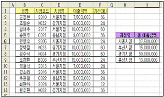
- {=SUMIF($D$2:$D$14=H6)}
- {=SUMIF($D$2:$D$14=H6,$E$2:$E$14,0)}
- {=SUM(IF($D$2:$D$14=H6))}
- {=SUM(IF($D$2:$D$14=H6,$E$2:$E$14,0))}
(정답률: 50%)
23. 아래와 같은 데이터에 주어진 조건으로 고급 필터를 실행했을 때의 결과 값으로 옳은 것은?
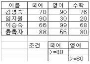
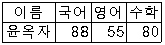
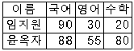
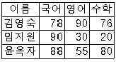
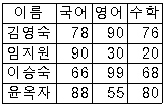
(정답률: 68%)
24. 엑셀 프로그래밍에서 ActiveCell-“대한민국”의 의미는?
- 문자열 “대한민국”을 활성 셀과 병합하여라.
- Active Cell과 “대한민국”은 같다.
- “대한민국”의 좌표를 Active Cell로 하라.
- 현재 셀에 문자열 “대한민국”을 넣어라.
(정답률: 48%)
25. 다음 수식의 결과 값으로 옳은 것은?
- =IF(AND(B2>=40, C2>=40, D2>=60), “합격”, “불합격”) => 결과 : B2 셀과 C2 셀의 값이 40 이상이고, D2 셀의 값이 60 이상이면 “합격”을 그렇지 않으면 “불합격”을 값으로 한다.
- =IF(OR(C2>=40, D2>=60), “합격”, “불합격”) => 결과 : C2 셀의 값이 40 이상이고, D2 셀의 값이 60 이상이면 “합격”을 그렇지 않으면 “불합격”을 값으로 한다.
- =IF(AND((B2, C2)>=40, D2>=60), “합격”, “불합격”) => 결과 : B2 셀과 C2 셀의 값이 40 이상이고, D2 셀의 값이 60 이상이면 “합격”을 그렇지 않으면 “불합격”을 값으로 한다.
- =AND(IF(B2>=40, C2>=40, D2>=60), “합격”, “불합격”) => 결과 : B2 셀과 C2 셀의 값이 40 이상이거나 D2 셀의 값이 60 이상이면 “합격”을 그렇지 않으면 “불합격”을 값으로 한다.
(정답률: 53%)
26. 다음 중 지도차트에 대한 설명으로 옳지 않은 것은?
- 밀도 차트는 데이터의 크기를 점의 개수로 나타낸다.
- 값 구분 차트는 데이터 크기를 색상의 농도로 나타낸다.
- 모든 지도 차트는 하나 이상의 데이터 계열을 사용할 수 있다.
- 등급 차트는 데이터의 크기를 기호의 크기로 나타낸다.
(정답률: 36%)
27. 아래의 워크시트에서 [D9] 셀에 “직급이 대리이면서 기본급이 10000 이상인 직원들의 평균 연령”을 나타내고자 한다. 다음 중 [D9] 셀에 들어갈 수식으로 옳은 것은?
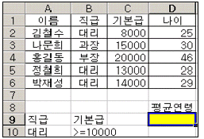
- =DAVERAGE(A1:D6, D1, A9:A10)
- =DAVERAGE(A9:B10, D1, A1:D6)
- =DAVERAGE(A1:D6, D1, A9:B10)
- =DAVERAGE(A9:A10, D1, A1:D6)
(정답률: 55%)
28. 다음 중 [스타일] 대화 상자에 대한 설명으로 옳지 않은 것은?
- 스타일 이름 : 기존의 스타일을 선택하거나 새 스타일의 이름을 입력한다.
- 수정 : [스타일 이름] 상자에서 선택한 스타일의 서식을 변경한다.
- 병합 : 내문서 폴더의 모든 통합 문서에서 다른 스타일들을 서로 합친다.
- 삭제 : 현재 스타일을 삭제한다. 기본으로 제공된 표준 스타일은 삭제할 수 없다.
(정답률: 51%)
29. 다음 중 [하이퍼링크 삽입] 대화상자에 대한 설명으로 옳지 않은 것은?
- “표시할 텍스트”는 하이퍼링크를 설정하는 셀에 항상 표시되는 문자열이다.
- “스크린 팁”은 하이퍼링크 위에 마우스 포인터를 놓았을 때 표시되는 문자열이다.
- “책갈피”는 하이퍼링크를 만들 수 있는 파일 목록을 나타낸다.
- “링크대상”은 삽입할 하이퍼링크의 종류를 나타낸 아이콘이다.
(정답률: 50%)
30. 워크시트를 인쇄하는데 매 페이지마다 맨 위에 “대한민국”이라는 글을 넣고자 한다. 이를 설정하는 옵션은?
- 쪽
- 여백
- 머리글/바닥글
- 인쇄 제목
(정답률: 73%)
31. 엑셀을 종료하지 않고 현재 활성화된 통합문서 창을 닫는 VBA 구문을 작성한 것으로 옳은 것은?
- Sub Test1()
ActiveWorkbook.NewWindow
End Sub - Sub Test1()
Application.Quit
End Sub - Sub Test1()
Workbooks.Close
End Sub - Sub Test1()
ActiveWindows.Close
End Sub
(정답률: 56%)
32. 아래 그림은 데이터 표를 이용하여 얻은 결과이다. 이때 적용한 데이터 표의 내용으로 옳은 것은?
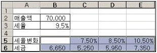
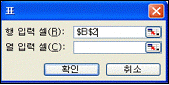
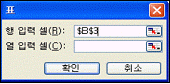
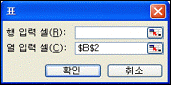
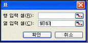
(정답률: 44%)
33. 작성된 매크로를 “매크로 지정”을 이용하여 매크로 이름을 지정할 수 없는 것은 다음 중 무엇인가?
- 그림
- 도형
- 양식 도구 모음
- 컨트롤 도구 상자
(정답률: 39%)
34. 다음 중 텍스트 나누기에 대한 설명으로 옳지 않은 것은?
- 한 셀에 입력되어 있는 데이터를 여러 셀로 분리시킬 수 있다.
- 워크시트에서 입력된 데이터를 범위로 지정한 후 [데이터]-[텍스트 나누기] 메뉴를 선택한다.
- 범위는 반드시 같은 행에 있어야 하지만 범위의 열 수에는 제한이 없다.
- 원본 데이터 형식으로는 “구분 기호로 분리됨”과 “너비가 일정함”이 있다.
(정답률: 68%)
35. 다음 중 매크로 실행에 관한 설명으로 옳은 것은?
- Visual Basic Editor를 이용하여 실행하고자 할 경우 [Alt]+[F5] 키를 사용할 수 있다.
- 워크시트에 삽입되어 있는 도형, 그림에 매크로를 지정할 수 있으나, 차트에는 매크로를 지정할 수 없다.
- [양식] 도구 모음의 [단추]를 이용해 한번 매크로를 지정하면, 이 후 편집할 수 없다.
- 컨트롤 도구 상자를 이용하여 매크로를 실행할 경우에는 프로시저를 이용해야 한다.
(정답률: 38%)
36. 숫자 24600을 입력한 후 아래의 표시형식을 적용했을 때 표시되는 결과로 옳은 것은?
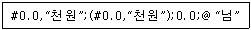
- 24.6천원
- 24.600
- 25,000천원
- (25.0천원)
(정답률: 62%)
37. 워크시트의 데이터를 분석하는 과정에서 사용되는 기능에 대한 설명으로 옳지 않은 것은?
- 데이터를 통합하려면 여러 범위의 데이터 값을 결합한다. 예를 들어 각 지국별 경비를 계산한 워크시트가 있으면 통합 기능을 사용하여 회사 전체 경비를 계산하는 워크시트로 수치를 통합할 수 있다.
- 시나리오는 워크시트에서 저장하고 자동으로 바꿀 수 있는 값의 집합이다. 시나리오를 사용하면 워크시트 모델의 결과를 예측할 수 있다. 여러 가지 값의 그룹을 만들어 워크시트에 저장한 다음, 새로운 시나리오로 전환하여 다른 결과를 볼 수 있다.
- 피벗 테이블을 삽입하려면 먼저 피벗 테이블로 계산할 행들이 그룹화 되도록 목록을 가장 먼저 정렬한다. 정렬 작업을 한 후에 피벗 테이블을 삽입할 수 있다.
- 한 수식의 원하는 결과만 알고 그 결과를 확인하기 위해 수식에 필요한 입력 값은 모를 때 도구 메뉴에서 목표 값 찾기를 클릭하여 목표 값 찾기 기능을 사용할 수 있다.
(정답률: 39%)
38. [B1] 셀에 “을지로2가”를 입력한 후 채우기 핸들로 [B4] 셀까지 드래그 했을 때 [B2], [B3], [B4] 각각의 셀에 입력되는 값들이 올바른 것은?
- 을지로2가, 을지로2가, 을지로2가
- 을지로3가, 을지로4가, 을지로5가
- 을지로3나, 을지로4다, 을지로5라
- 을지로2나, 을지로2다, 을지로2라
(정답률: 59%)
39. 다음 중 [차트] 기능에 대한 설명으로 옳은 것은?
- 차트로 작성할 데이터를 시트에 입력하지 않고 차트 마법사 2단계에서 직접 모든 원본 데이터를 입력할 수도 있다.
- 일정 기간 동안의 데이터 변화 추세를 확인하는 데는 세로 막대형 차트가 적합하다.
- 3차원, 원형, 방사형, 도넛형, 표면형 차트에 추세선을 추가할 수 있다.
- 범례의 경우 지정할 수 있는 위치에는 아래쪽, 모서리, 위쪽, 오른쪽, 왼쪽이 있는데 이중에서 모서리를 설정하면 차트의 오른쪽 아래 모서리에 범례가 표시된다.
(정답률: 31%)
40. 다음 설명 중 틀린 것은 어느 것인가?
- 선택한 범위를 워크시트 화면에 가득하게 보이게 하려면 [보기]-[확대/축소]에서 “선택 부분에 맞춤”을 선택한다.
- 페이지 설정에서 용지의 방향을 설정할 수 있다.
- 인쇄 미리 보기 화면에서도 페이지 설정을 할 수 있다.
- 그림 복사, 그림 붙여넣기, 그림 연결 붙여넣기 명령을 찾을 수 없을 때 [Ctrl] 키를 누른 채 편집 메뉴를 누른다.
(정답률: 43%)
3과목: 데이터베이스 일반
41. 보고서의 매 페이지마다 같은 내용을 인쇄하려고 한다. 다음 중 보고서의 어떤 영역에 넣어야 하는가?
- 보고서 머리글 영역
- 본문 영역
- 그룹 머리글 영역
- 페이지 머리글 영역
(정답률: 57%)
42. 액세스에서 작성한 보고서를 외부파일로 내보내기를 할 때 작성할 수 없는 파일 종류는?
- 액세스 데이터베이스 파일(*.mdb)
- 엑셀 파일(*.xls)
- HTML 파일(*.html, *htm)
- 오라클 데이터베이스 파일(*.db)
(정답률: 45%)
43. 다음 SQL 문장에 대한 설명 중 옳지 않은 것은?
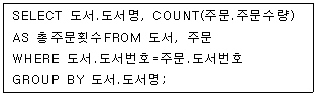
- 도서명별로 총 주문횟수를 보여주는 문장이다.
- 도서 테이블과 주문 테이블에는 동일한 형식의 도서번호 필드가 존재한다.
- WHERE 절이 없으면 에러가 발생한다.
- 도서와 주문 테이블 간에 조인이 발생한다.
(정답률: 39%)
44. 다음은 폼에 관한 설명이다. ( ) 안에 들어갈 알맞은 것은?
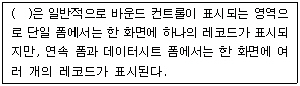
- 본문 영역
- 폼 머리글 영역
- 폼 바닥글 영역
- 페이지 머리글 영역
(정답률: 52%)
45. 다음 중 참조 무결성에 대한 설명으로 가장 옳지 않은 것은?
- 참조 무결성은 참조하고 참조되는 테이블간의 참조 관계에 아무런 문제가 없는 상태를 의미한다.
- 다른 테이블을 참조하는 테이블(관련 테이블)의 레코드 삭제시 참조 무결성이 깨질 수 있다.
- 다른 테이블을 참조하는 테이블(관련 테이블)의 레코드 추가시 참조 무결성이 깨질 수 있다.
- 다른 테이블에 의해 참조되는 테이블(기본 테이블)의 레코드 수정시 참조 무결성이 깨질 수 있다.
(정답률: 33%)
46. 다음 보고서의 그룹화 수준이 지정된 컨트롤의 속성 중 [데이터]-[누적총계]에 대한 설명으로 옳지 않은 것은?
- 특정 필드의 값에 대한 페이지별 누적 총계를 계산하여 표시하는 속성
- 아니오(기본 값)를 선택하면 레코드에서 원본으로 사용하는 필드의 값이나 계산결과를 표시
- 그룹을 선택하면 동일한 그룹 내에서의 누계를 표시
- 모두를 선택하면 그룹에 관계없이 전체 데이터에 대한 누계를 표시
(정답률: 26%)
47. 그림에서와 같이 테이블 디자인의 조회 표시에서 콤보상자를 선택하면 여러 가지 속성이 표시된다. 속성에 대한 설명 중 옳지 않은 것은?
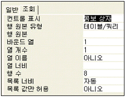
- 행 원본 : 드롭다운 목록에 나타날 데이터의 원본을 지정한다.
- 바운드 열 : 콤보상자의 드롭다운 목록에 나타날 열(필드)을 지정한다.
- 행 개수 : 콤보상자의 목록에 표시되는 최대 행(레코드)의 수를 지정한다.
- 목록너비 : 콤보상자 드롭다운 목록의 너비를 지정한다.
(정답률: 41%)
48. 다음은 공통점이 있는 이벤트를 속성을 모아 놓은 것이다. 이 중 가장 관련이 적은 것은?
- After Update
- On Change
- Before Update
- On Dbl Click
(정답률: 56%)
49. 다음 중 “연결 테이블(Linked Table)”에 대한 설명으로 가장 옳지 않은 것은?
- 외부 데이터를 사용하는 방법 중의 하나이다.
- 연결된 테이블에서 데이터를 수정하면 원래의 데이터도 함께 수정된다.
- 연결된 테이블을 삭제하면 원본에 해당하는 테이블도 함께 삭제된다.
- 연결된 테이블에서 레코드를 추가하면 원래의 데이터에도 함께 추가된다.
(정답률: 60%)
50. 다음 중 탭 순서(Tab Order)에 관한 설명으로 가장 옳지 않은 것은?
- 폼 보기에서 ‘Tab’이나 ‘Enter’ 키를 눌렀을 때 포커스(Focus)의 이동 순서를 지정하는 것이다.
- ‘탭 정지’ 속성을 ‘아니오’로 설정한 컨트롤을 포커스의 이동 순서에서 제외한다.
- 레이블이나 명령 단추 컨트롤은 탭 순서에 포함시킬 수 없다.
- 속성 창의 ‘탭 인덱스’ 속성을 이용하여 설정할 수 있다.
(정답률: 43%)
51. 아래의 기본 테이블을 이용한 질의의 결과 레코드가 3개인 것은 무엇인가? (단 테이블에는 화면에 표시된 7개의 데이터만 들어있다.)
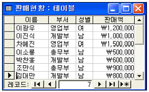
- Select 부서, SUM(판매액) AS 판매합계 From 판매현황 Group By 부서;
- Select 성별, AVG(판매액) AS 판매평균 From 판매현황 Group By 성별;
- Select 부서, COUNT(부서) AS 사원수 From 판매현황 Group By 부서 Having COUNT(부서)>2;
- Select 부서, COUNT(판매액) AS 사원수 From 판매현황 Where 판매액 >=1000000 Group By 부서;
(정답률: 31%)
52. 폼에 대한 설명으로 가장 옳지 않은 것은?
- 테이블이나 쿼리를 원본으로 지정하여 데이터가 연결되어 있는 폼을 언바운드 폼이라 한다.
- 폼이란 데이터의 입력, 편집 등의 작업을 위한 사용자와 데이터베이스간의 인터페이스이다.
- 폼의 형식과 원본으로 사용할 테이블만 선택하면 액세스가 자동으로 만들어 주는 폼을 자동 폼이라고 한다.
- 폼은 레이블, 콤보상자, 목록상자, 명령단추 등의 컨트롤로 구성된다.
(정답률: 59%)
53. 다음 보기의 매크로 함수 중 데이터를 내보내거나 가져오는 작업과 관련이 없는 함수는?
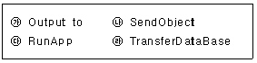
- (가)
- (나)
- (다)
- (라)
(정답률: 59%)
54. 인덱스 생성에 관한 설명으로 가장 적당한 것은?
- 기본 키로 설정되는 필드에 대해서는 자동적으로 인덱스가 생성된다.
- 인덱스를 생성한 필드의 값을 중복 불가능하다.
- 인덱스를 생성한 필드의 값은 널(Null)일 수 없다.
- 하나의 테이블에는 하나의 인덱스만을 생성할 수 있다.
(정답률: 27%)
55. 하위 폼에 대한 설명으로 옳지 않은 것은?
- 하위 폼이란 특정한 폼 안에 들어 있는 또 하나의 폼을 말한다.
- 하위 폼을 사용하면 일 대 다 관계가 설정되어 있는 테이블이나 쿼리에서 데이터를 효과적으로 표시할 수 있다.
- 하위 폼은 단일 폼으로 표시되며 연속 폼으로는 표시할 수 없다.
- 데이터베이스 창에서 테이블, 쿼리, 폼 등을 폼 창으로 드래그 앤 드롭하여 하위 폼으로 삽입할 수 있다.
(정답률: 70%)
56. 다음 페이지 번호식을 이용하여 출력되는 예로 옳은 것은?(단, 현재 페이지는 12이고, 전체 페이지는 수는 50이다.)
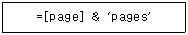
- 12 & 50
- 1250
- 12pages
- 50pages
(정답률: 58%)
57. Select 문장에서 한 개 또는 그 이상의 필드를 기준으로 오름차순 또는 내림차순으로 정렬하고자 할 때 사용되는 절로 옳은 것은?
- Having 절
- Group by 절
- Order by 절
- Where 절
(정답률: 62%)
58. 다음의 관계를 참고하여 부서이름이 “영업부”인 사원들의 성명과 근무년수를 검색하는 SQL 구문으로 옳은 것은?
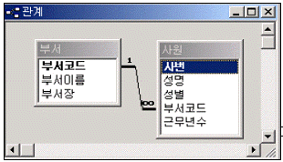
- SELECT 성명, 근무년수 FROM 사원 WHERE 부서코드 IN(SELECT 부서이름 FROM 부서 WHERE 부서이름 = ‘영업부’);
- SELECT 성명, 근무년수 FROM 사원 WHERE 부서코드 IN(SELECT 부서코드 FROM 부서 WHERE 부서이름 = ‘영업부’);
- SELECT A.성명, A.근무년수 FROM 사원 AS A, 부서 AS B WHERE B.부서이름 = ‘영업부’;
- SELECT 성명, 성별 FROM 사원 WHERE 부서코드 LIKE (SELECT 부서코드 FROM 부서 WHERE 부서이름 = ‘영업부’);
(정답률: 49%)
59. 다음 중 다른 테이블을 참조하는 외부 키(FK)에 대한 설명으로 가장 적합한 것은?
- 외부 키 필드의 값은 유일해야 하므로 중복된 값이 입력될 수 없다.
- 외부 키 필드의 값은 널(Null) 값일 수 없으므로, 값이 반드시 입력되어야 한다.
- 한 테이블에서 특정 레코드를 유일하게 구별할 수 있는 속성이다.
- 하나의 테이블에는 여러 개의 외부 키가 존재할 수 있다.
(정답률: 53%)
60. 다음 중 데이터베이스의 정규화에 관한 설명으로 옳지 않은 것은?
- 정규화는 중복되는 값을 일정한 규칙에 의해 추출하여 보다 단순한 형태를 가지는 다수의 테이블로 데이터를 분리하는 작업을 의미한다.
- 테이블의 크기가 적어지므로 관리하기가 쉬워진다.
- 한 테이블이 가능한 많은 정보를 관리하여 데이터 조회가 편리하다.
- 정규화를 수행해도 데이터의 중복을 완전히 제거할 수 있는 것은 아니다.
(정답률: 42%)